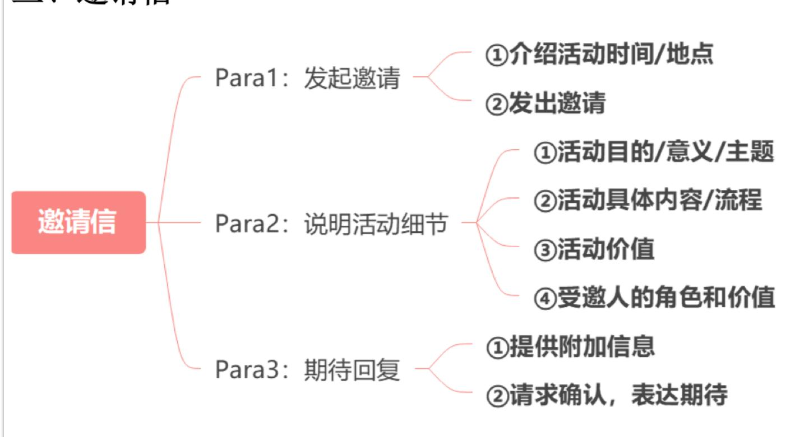

▼ 邀请信
三、邀请信

（一）首段：发起邀请
①介绍活动时间/地点
[活动]organized by[组织方] will be held at[地点]+ from[时间]to[时间]on[日期]
[活动]hosted by[组织方]is scheduled to take place at[地点]+ from[时间]to[时间]on[日期]常用地点：
| Auditorium 礼堂Indoor Arena 室内体育场Outdoor Plaza 户外广场 | Meeting Room 会议室Conference Room 会议室Lecture Hall 报告厅 |
时间表达:
from 9:00 a.m. to 11:00 a.m. 上午 9 点到 11 点
from 2:00 p.m. to 4:00 p.m. 下午 2 点到 4 点
from 18:00 to 20:00 18 点到 20 点
between August and August 8月15日至8月18日
from June to June 6月5日至6月10日
on December 12月15日
②发出邀请
We would be greatly honored if you could take time out of your busy schedule to attend this event.
如果您能在百忙之中抽出时间参加此次活动，我们将不胜荣幸。
It would be a great honor to have you join us for the upcoming event.
我们将非常荣幸邀请您参加即将举行的活动。
You are cordially invited to participate in the event as[角色].
我们诚挚邀请您以[角色]的身份参加此次活动。
| (二) 中间段: 活动细节 |
| 1活动目的/意义/主题 whyThe primary purpose of this event is to ... 活动的主要目的是 |
| This event seeks/aims/is designed to inspire participants to _.本次活动旨在激发参与者_ |
| This event is designed to explore _ and provides a platform for _. |
本次活动旨在探索_，并提供_平台
常见活动类型：
| Conference: 会议Seminar: 研讨会Workshop: 工作坊Lecture: 讲座Forum: 论坛 | Contest: 竞赛Speech Contest: 演讲比赛Graduation Ceremony 毕业典礼Award Ceremony: 颁奖典礼Welcome Party: 欢迎会 |
活动常见目的：
| Foster communication 促进交流Enhance understanding 加深理解Encourage innovation 鼓励创新Inspire creativity 激发创造力Celebrate achievements 庆祝成就Raise awareness 提高意识 | Improve abilities/skills 提升能力Promote collaboration 促进合作Promote teamwork 促进合作Develop critical thinking and problem-solving skills 培养批判性思维和问题解决能力 |
②活动具体内容/流程
The most anticipated part will be the opening speech, during which the host will welcome all participants and set the tone for the event.
活动最令人期待的部分将是开幕演讲，主持人将欢迎所有参与者并为活动定调。
The most anticipated part will be the judges’ feedback, which will provide valuable insights and constructive comments to all participants.
活动最令人期待的部分将是评审的反馈，他们将为所有参与者提供宝贵的见解和建设性的建议。
The most anticipated part will be the group photo session, which will capture the memorable moments of the participants together.
活动最令人期待的部分将是集体合影环节，记录下所有参与者的难忘时刻。
③活动价值
This event offers us a unique opportunity to exchange ideas with professionals from diverse backgrounds, fostering interdisciplinary communication.
本次活动提供了一个与来自不同背景的专业人士交流思想的独特机会，促进跨学科交流。
This event serves as a platform for individuals to showcase their talents and achievements, allowing them to gain recognition and feedback from experts.
本次活动为个人提供了一个展示才华和成就的平台，使他们能够获得专家的认可与反馈。
Participants will have access to valuable resources and professional guidance, which will significantly support their future development.
参与者将获得宝贵的资源与专业指导，这将极大地支持他们的未来发展。
④受邀人的角色和价值
Your participation as a judge/speaker will not only elevate the quality of the event but also provide constructive feedback to the participants.
您作为评委/演讲者的参与不仅将提升活动质量，还将为参与者提供建设性的反馈。
Given your extensive experience in ____, your participation will add significant value to the event, offering attendees a unique opportunity to learn from your expertise.
鉴于您在____领域的丰富经验，您的参与将为活动增添重要价值，为与会者提供从您的专业知识中学习的宝贵机会。
活动的日程已附上，供您参考。
②请求确认，表达期待
It would be much appreciated if you could send back the reply slip before [时间].
如果您能在[时间]之前回寄回复单，我们将不胜感激。
I would appreciate it if you could inform me of your decision by replying to this email before [时间].
如果您能在[时间]之前通过回复此邮件告知您的决定，我将不胜感激。
Para1: ①I hope this email finds you well. ②The English Speech Contest organized by the Students’ Union will be held at the auditorium from 6:00 p.m. to 8:00 p.m. on May . ③We would be greatly honored if you could join us as a judge for the contest.
Para2: ①The primary purpose of this contest is to improve students’ English-speaking abilities and boost their confidence in public speaking. ②Your participation as a judge will not only elevate the quality of the contest but also provide constructive feedback to the participants, helping them refine their skills.
Para3: ①The schedule of the contest is attached for your reference. ②I would appreciate it if you could confirm your participation by replying before May 10th.
Yours sincerely,
Li Ming
第一段：①希望您一切安好。②由学生会组织的英语演讲比赛将于 5 月 15 日下午 6 点至 8 点在礼堂举行。③如果您能作为评委参加此次比赛，我们将不胜荣幸。
第二段：①本次比赛的主要目的是提高学生的英语口语能力，并增强他们的公众演讲信心。②您作为评委的参与不仅会提升比赛的质量，还将为参赛者提供建设性的反馈，帮助他们提升技巧。
第三段：①比赛的日程已附上，供您参考。②如果您能在5月10日之前回复确认您的参与，我们将不胜感激。
诚挚的，
2018年小作文
Directions:
Write an email to all international experts on campus, inviting them to attend the graduation ceremony. In your email, you should include the time, place and other relevant information about the ceremony.
模板范文（129词）
Dear Sir or Madam,
Para1: ①I hope this email finds you well. ②The 2024 Graduation Ceremony will be held at the auditorium from 9:00 a.m. to 11:00 a.m. on May . ③It would be a great honor to have you join us for the upcoming event.
Para2: ①The primary purpose of the ceremony is to celebrate the achievements of the graduates and to strengthen the bond between the graduates and the university. ②The most anticipated part will be the group photo session, which will capture the memorable moments of all graduates and professors together. ③Your presence would be greatly appreciated, as it will add significance to the celebration and inspire all graduates.
Para3: ①The detailed schedule is attached for your reference. ②It would be much appreciated if you could send back the reply slip before May .
Yours sincerely,
Li Ming
范文翻译：
尊敬的先生/女士：
第一段：①希望您一切安好。②2024年的毕业典礼将于5月10日上午9点至11点在礼堂举行。③如果您能参加此次活动，我们将感到非常荣幸。
第二段：①本次典礼的主要目的是庆祝毕业生的成就，并加强毕业生与学校之间的联系。②典礼中最令人期待的部分将是集体合影，记录下所有毕业生和教授在一起的难忘时刻。③您的出席将为此次庆典增添意义，并激励所有的毕业生。
第三段：①活动的详细日程已附上，供您参考。②如果您能在5月1日前回寄回复单，我们将不胜感激。
诚挚的，
李明
2022年小作文
Directions:
Write an email to a professor at a British university, inviting him/her to organize a team for the international innovation contest to be held at your university.
You should write about 100 words on the ANSWER SHEET.
模板范文（125词）
Dear Professor Black,
Para1: ①I hope this email finds you well. ②The International Innovation Contest, organized by our university, will be held from August to August . ③We would be honored if you could organize a team from your university to join this exciting contest.
Para2: ①The contest aims to inspire innovative solutions to real-world problems and promote teamwork among participants. ②The most anticipated part will be the judges’ feedback, which will provide valuable insights and constructive comments to all participants. ③Moreover, this event offers us a unique opportunity to exchange ideas with teams from prestigious universities worldwide and from diverse backgrounds, fostering interdisciplinary communication.
Para3: ①The detailed schedule is attached for your reference. ②It would be much appreciated if you could send back the reply slip before August 10th.
Yours sincerely,
Li Ming
范文翻译：
亲爱的布莱克教授：
第一段：① 希望您一切安好。② 由我校主办的国际创新大赛将于8月15日至8月18日举行。③ 如果您能组织贵校团队参与此次激动人心的比赛，我们将深感荣幸。
第二段：①此次比赛旨在激发对现实问题的创新解决方案，并促进参赛者之间的团队合作。②最令人期待的部分将是评委的反馈，他们将为所有参赛者提供宝贵的见解和建设性的意见。③此外，该赛事还提供了一个独特的机会，让来自全球著名大学和不同背景的团队交流想法，促进跨学科的沟通。
第三段：① 详细日程已附上，供您参考。② 如果您能在8月10日之前回寄回复单，我们将不胜感激。